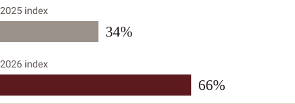

The few places AI can move EBITDA in a portfolio company
Surveys point to the cost base, working capital and the product itself.
Almost every portfolio company now uses AI somewhere. Very few can find it in the management accounts. McKinsey’s State of AI survey, published in November 2026, found 37% of respondents reporting any contribution from AI to EBIT. That share has barely moved since 2025 although more organisations now scale the technology. Only about 6% attribute 5% or more of EBIT to AI.
For a sponsor the gap between use and profit matters more than adoption. A value creation plan requires revenue and EBITDA growth, especially while multiple expansion is harder to come by. A pilot that impresses at the board away day adds nothing to the exit until and unless it delivers more profitability.
Private equity’s own surveys agree. In March 2026 Bain and StepStone published a survey of 103 professionals at buyout firms: 39% expected no material financial impact from AI on their portfolio companies this year, 46% expected cost savings or efficiency and 10% expected revenue growth. Where AI does reach the P&L it now arrives faster. FTI Consulting’s 2026 Value Creation Index surveyed 555 senior private equity leaders; 66% reported AI-related benefits within 12 months, up from 34% a year earlier. Only 31% described their implementation as efficient.
The share of firms seeing AI benefits within a year has nearly doubled
Share of private equity leaders reporting AI-related benefits within 12 months

Operations and bought-in costs
McKinsey’s 2026 respondents most often reported cost reductions from AI in supply chain management, service operations and manufacturing. These functions have high volumes of repeat work and unit costs a CFO is already meticulously measuring. Bought-in costs follow the same logic. Nearly a third of respondents (32%) had decided against buying at least one software product or feature because they could build it in-house with coding agents. Where AI replaces work the business pays a supplier for, the savings appear in the next set of management accounts.
Working capital
In FTI’s June 2026 index 52% of firms said their working capital initiatives had beaten the original business case, the best result of the nine levers measured. Respondents nonetheless ranked working capital last for 2026, and it had the lowest share of AI-enabled initiatives of any lever. Current tools are most reliable on exactly this kind of rule-based work: chasing debtors, matching invoices and forecasting cash. If the portfolio business is highly leveraged, a sustainable improvement in the cash conversion cycle can be worth more than an incremental overhead saving.
Engineering and the product
Software investors are furthest ahead. Hg, the European software investor, reported more than 1,600 live AI projects across its portfolio in March 2026 with about US$260m of budgeted EBITDA impact at the end of 2025, five times the 2024 figure. Budgeted is not banked: the figure comes from Hg’s own survey of its companies. Its 2026 targets for each portfolio company include a threefold rise in engineering productivity, automation of 40% of support functions and two percentage points on EBITDA margin.
The exit multiple rewards AI in the product more than AI in the back office. McKinsey’s June 2026 analysis of 471 PE-backed companies across 31 industries found that those embedding AI broadly traded at a median revenue multiple about 130% higher than companies using it opportunistically.
Three tests before funding a pilot
McKinsey’s high performers redesign workflows around AI instead of inserting it into existing ones. In FTI’s survey 19% of the top-performing firms beat their AI business case, against 5% of the rest. Before a board funds any pilot I would ask management for three things:
- Line in the management accounts the pilot will move
- Owner of that line, with a baseline measured before the pilot starts
- Date the pilot will be judged and stopped if the line has not moved
AlixPartners’ private equity leadership survey of March 2026 found investors ranking AI among their top priorities while the executives running portfolio companies ranked margin, debt and operational risk. AI aimed at the back office serves both lists. In the first board meeting after completion I would ask for a single page showing every AI initiative in the business, the line each is meant to move and the date it will be judged. Anything without all three should stop.
Sources
- McKinsey, The state of AI in 2026: On the road to ROI (November 2026)
- Bain & Company and StepStone, Private Equity’s Reality Check: The GP Outlook for 2026 (March 2026)
- FTI Consulting, 2026 Private Equity Value Creation Index (June 2026)
- FTI Consulting, Working Capital’s Next Chapter for Private Equity (2026)
- Hg, Driving AI Transformation
- Edison, HgT: Key takeaways from the 2026 CMD (June 2026)
- McKinsey, Beyond productivity: How AI creates value in private equity (June 2026)
- AlixPartners, 11th Annual PE Leadership Survey (March 2026)